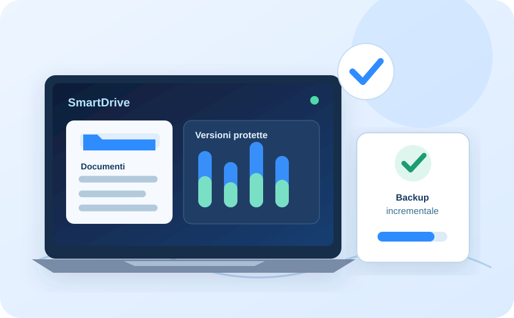
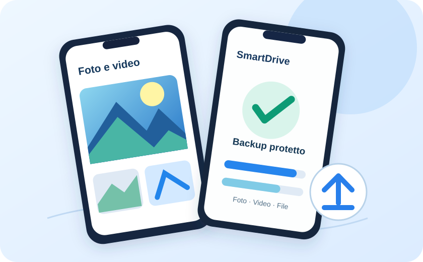
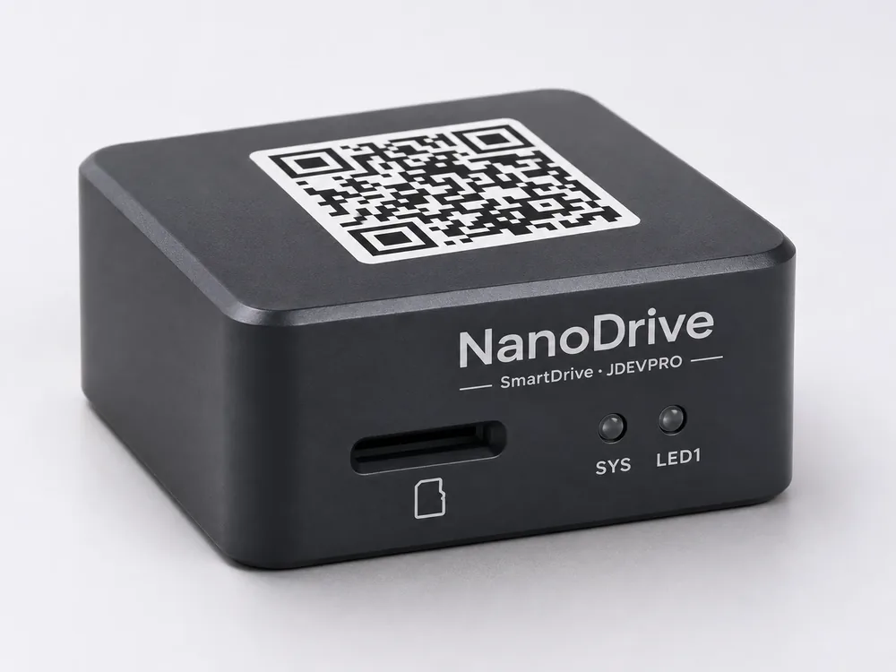

Indipendente
Backup incrementali di cartelle e file, versionamento e ripristino senza il gestionale.
Nuovo prodotto JDEVPRO · presto disponibile
SmartDrive non è semplice storage cloud: è una soluzione di sicurezza operativa per aziende e professionisti. Backup incrementali, versionamento e recupero dei documenti, gestione semplice di più terminali. Il prodotto previsto comprende Windows, Mac, Android e iPhone, con backup di foto e dati.
Windows · Mac · Android · iPhone · presto disponibile
SmartDrive
SmartDrive è un prodotto autonomo per proteggere i documenti di lavoro con backup incrementale, cronologia e ripristino. Puoi gestire più dispositivi e, se usi SmartAgent, collegare i file alle pratiche. Windows, Mac, Android e iPhone fanno parte del prodotto previsto al rilascio.
Backup incrementali di cartelle e file, versionamento e ripristino senza il gestionale.
I file possono essere associati a clienti e pratiche: l'integrazione è facoltativa.
Gestisci i terminali da un unico spazio, con applicazioni Windows, Mac, Android e iPhone previste nel prodotto.
Windows · Mac
SmartDrive è progettato per backup incrementale delle cartelle di lavoro, versioni recuperabili e ripristino. L'interfaccia consentirà la gestione semplice dei dispositivi collegati. La versione Windows è prevista su Microsoft Store e quella per Mac fa parte dello stesso prodotto completo. I recuperi dovranno essere verificati con test prima del rilascio.

La procedura prevista usa un codice monouso valido 2 minuti, con conto alla rovescia. Ogni dispositivo riceve una chiave revocabile non mostrata nell'interfaccia. Nell'app non servirà digitare il server o le proprie credenziali.
Android · iPhone · presto disponibile
Le applicazioni mobili sono parte del prodotto SmartDrive previsto al rilascio, non un servizio aggiuntivo futuro. Sarà possibile eseguire backup di foto, video, file e dati accessibili autorizzati dall'utente. Restano i limiti e i permessi previsti da Android e iOS.

NanoDrive · Presto disponibile
Vuoi conservare documenti, foto e archivi sui tuoi dispositivi, ma consultarli fuori ufficio in modo sicuro? NanoDrive è il nostro hardware progettato per collegare NAS, hard disk e chiavette USB e rendere accessibili i file da remoto, senza imporre lo storage cloud.
50 €
Hardware + primi 12 mesi di servizioDal 13° mese: rinnovo previsto a 2 €/mese
Offerta di lancio prevista: NanoDrive a 50 € con i primi 12 mesi di servizio remoto inclusi. Dal 13° mese rinnovo previsto a 2 €/mese. IVA e spedizione da definire. È prevista un'infrastruttura di accesso remoto su server italiano, da verificare prima del rilascio.
NanoDrive mantiene i dati in locale: l'accesso da remoto non equivale a una seconda copia di backup. Per protezione contro guasti e furto serve anche una copia separata.

Presto disponibile
Piani autonomi o aggiunti a SmartAgent · prezzi mensili IVA esclusa. Il checkout non è ancora disponibile.
| Spazio | Solo SmartDrive | Con SmartAgent |
|---|---|---|
| 100 GB | 4,90 € | 2,90 € |
| 500 GB | 7,90 € | 5,90 € |
| 1 TB | 11,90 € | 9,90 € |
| 2 TB | 19,90 € | 17,90 € |
Prova prevista: 30 giorni e 5 GB senza addebito durante la prova. Carta di pagamento obbligatoria per l’attivazione. Eventuale rinnovo a pagamento alle condizioni accettate.
Presto disponibile
Le funzioni descritte, comprese quelle per Windows, Mac, Android e iPhone, sono previste nel prodotto da rilasciare. Oggi questa pagina non attiva abbonamenti, download o una prova del servizio.
Aggiungi SmartDrive come pacchetto separato, con integrazione facoltativa per documenti di clienti e pratiche.
Scopri SmartAgentContatto
Descrivici i sistemi che hai, cosa vuoi ottenere e i tempi. Ti rispondiamo per iscritto entro 24 ore, con domande mirate o con una proposta.